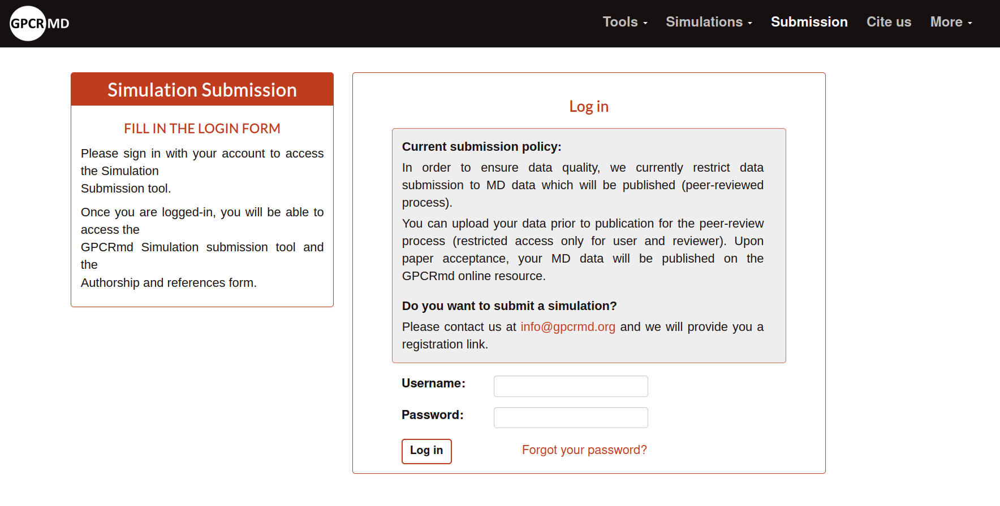

GPCRmd accounts guide
In order to upload submissions into GPCRmd or use some of the GPCRmd API services you must need an account. Next, it is explain step by step how to create an account in GPCRmd from zero.
Contact with GPCRmd team
To start the process to create an account, the user should go first to the section “Submission” from the top menu of GPCRmd:
{kind=link}
Then, the user will access into a new section of the web, the submission login form. Here, it can be read the policy submission terms and you have access to the mail to contact us for the creation of the account or any doubt/problem with GPCRmd: info@gpcrmd.org.
{kind=link}
We always try to answer as faster as we can, we apologize in advance if we take some long time to answer.
Register
Once, you contact us we will send to you a link to a register form that must be complete to create a new account into GPCRmd. The user must to complete all the parameters:
{kind=link}
The secret submission key is a password used to protect the non-published submissions. If you wanna share with others the link of these submissions is necessary to access using this key.
IMPORTANT NOTE: Save the password safety because from here you can only reset the password, not recover it.
Click on submit and if all the process runs correctly the user will obtain a message confirm it.
{kind=link}
Activation
Now the user should check the inbox of the email indicated in the register form. It must be something like:
{kind=link}
Click on the link attach in this email and it will redirect into GPCRmd with the next:
{kind=link}
Now, the user can access from the log in page with the new account already created and activated. Note: remember to activate before the two days timelapse. If you do not activate the account you can not access.

If the user wants to start to upload simulations go to the submission section.
GPCRmd account menu
At the home account page, in the top of the right box, the user have some options to manage the account:
Edit user information: to modify the general information of the account and update it.
{kind=link}
Note: Click on the email to change it.
Change password: change the password of the account.
{kind=link}
Secret submission key: change the secret key necessary to view the non-published submissions.
{kind=link}
Log out: to disconnect from GPCRmd.
Reset password
Sometimes the user can forget the account password. For this reason, we have a reset method to reset the password to a new one. As policy of security the GPCRmd team cannot recover the passwords because is a private element for each user. The only thing that we can offer is to reset them to a new and different one.
To access into this process the user need to click on “Forgot your password?” under the credencials of the log in form.
Then the page will ask the email associated with the account that wants to reset the password:
{kind=link}
Once, the user introduce the email and click on “Send” a confirm message will show.
{kind=link}
Automatically, the user will recieve an email from info@gpcrmd.org with the link to reset the password.
{kind=link}
Using the link attached to this email the user can acces into the reset password form in GPCRmd:
{kind=link}
When, it is write the new password and click on “Change my password”, if all the process runs correclty, the user will obtain a message confirming the reset of the password for the new one:
{kind=link}
From then, the user can login with the new password (link accounts/login/).